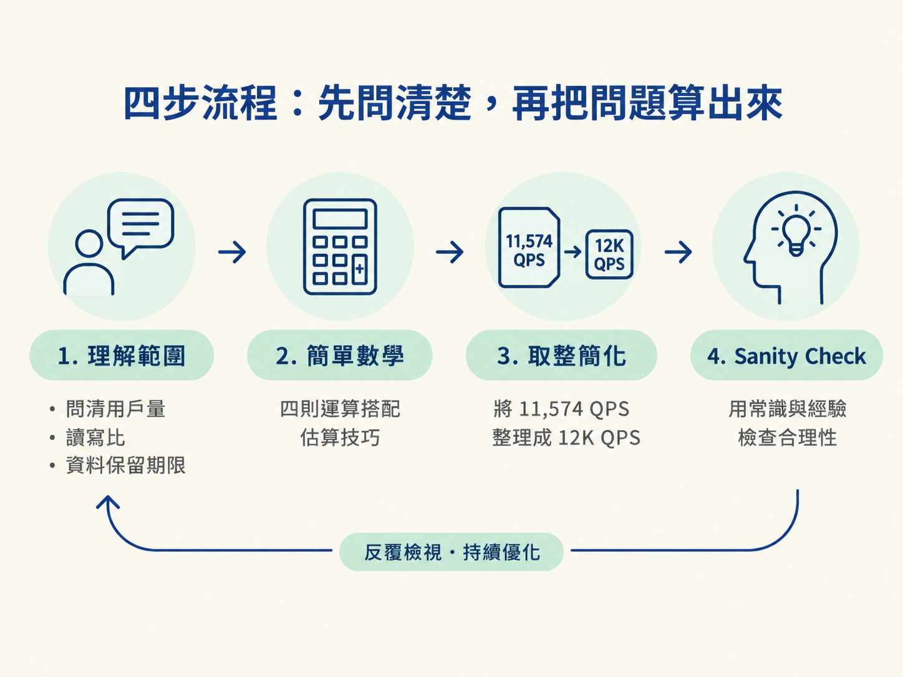
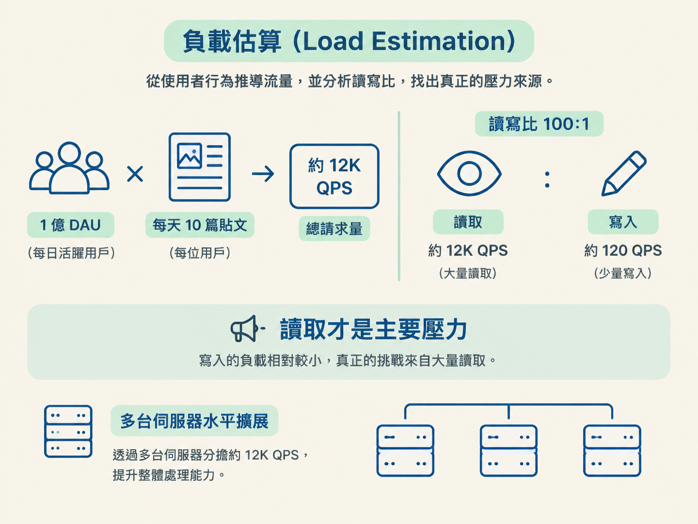
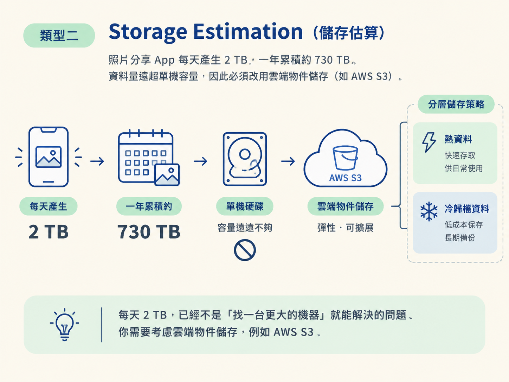
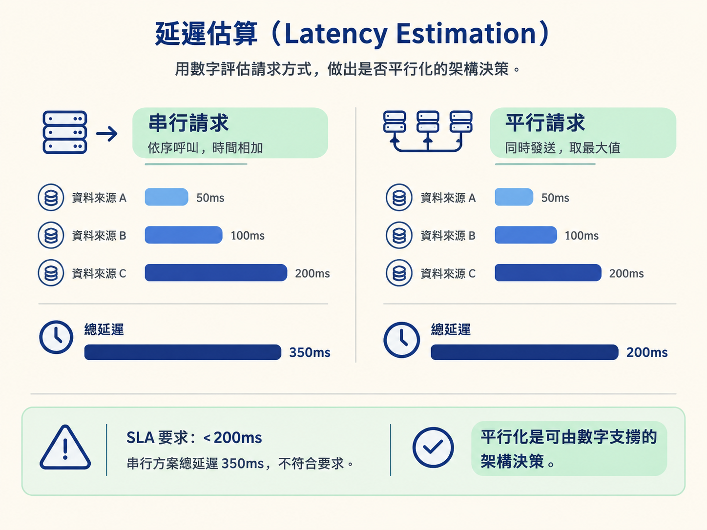
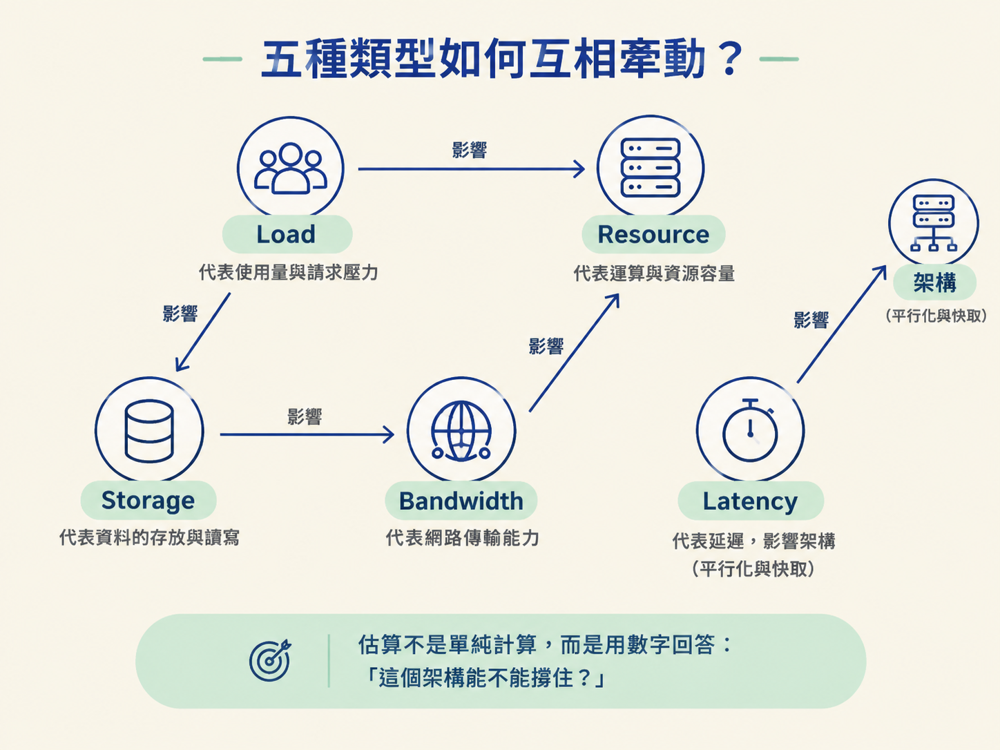

學習目標：學會運用五種估算類型——Load、Storage、Bandwidth、Latency、Resource——並掌握四步估算流程，在面試中快速完成容量估算。
上一課你學過四種估算技巧：Rule of Thumb、Approximation、Breakdown 和 Sanity Check。這一課要做的，是把這些技巧放進一條可以反覆使用的流程裡。
不管題目是設計 Twitter、Uber，還是照片分享 App，估算的節奏都差不多：
這四步是估算的骨架；接下來的五種類型，則是要填進骨架裡的內容。你可以把它想成看診：先問症狀，再做基本計算，最後確認診斷有沒有離譜。

Load Estimation 計算的是每秒有多少請求，常用單位是 QPS（每秒查詢數）或 TPS（每秒交易數）。這個數字會直接影響系統是否需要水平擴展，也就是增加更多台伺服器一起分擔工作。
假設你正在設計一個社交媒體平台。面試官提供的條件是：1 億 DAU，每位使用者每天發布 10 篇貼文。可以這樣估算：
100M DAU × 10 posts/day = 1B posts/day
1B ÷ 86,400 sec ≈ 11,574 QPS
取整 ≈ 12K QPS12K QPS 對架構有什麼意義？一台普通的 Web 伺服器，例如 Nginx 加 Node.js，在沒有額外優化的情況下，處理能力大約是 1K～5K QPS。因此，12K QPS 代表你至少需要約 3～12 台伺服器進行水平擴展。
不過，別忘了先看看讀寫比。假設讀寫比是 100:1，寫入端的壓力可能只有約 120 QPS。這時候，真正吃力的未必是寫入，而可能是大量讀取。這就是為什麼讀寫比是「理解範圍」時一定要問的問題。

Storage Estimation 計算的是需要多少儲存空間。它協助你判斷：單機資料庫是否足夠，還是要使用分散式儲存、物件儲存，甚至設計資料歸檔策略。
來看一個照片分享 App。假設有 5 億名使用者，每人每天上傳 2 張照片，每張照片平均 2MB：
500M × 2 photos/day × 2MB = 2,000,000 MB/day
= 2 TB/day
一年 ≈ 730 TB每天 2 TB，已經不是「找一台更大的機器」就能解決的問題。這個數字會直接排除使用本機 SSD 的方案，你需要考慮雲端物件儲存，例如 AWS S3。

同時，也要繼續追問資料生命週期：照片要保留多久？舊照片是否要移到更便宜的儲存層？這些問題都源自同一個估算結果。
Bandwidth Estimation 計算的是網路需要多寬。它會影響你是否需要 CDN，以及要部署多少網路連線和邊緣節點。
假設一個影片串流平台有 1,000 萬名使用者同時觀看 1080p 影片，每一路串流需要 4 Mbps：
10M users × 4 Mbps = 40,000,000 Mbps
= 40 Tbps40 Tbps 是非常大的數字。作為 Sanity Check，Netflix 的全球峰值頻寬大約是 100+ Tbps；兩者位在相同數量級，因此這個估算看起來合理。
但它也立刻告訴你：這不可能靠一台伺服器處理。你需要透過全球 CDN，把影片快取到距離使用者較近的邊緣節點，讓使用者不必每次都回源站拉取內容。
Latency Estimation 計算的是回應時間。它不只是告訴你系統快不快，也會直接影響架構設計：哪些工作可以平行進行，哪些工作必須依序完成。
假設一個 API 需要從三個資料來源取得資料，延遲分別是 50ms、100ms 和 200ms：
| 執行方式 | 總延遲 | 計算 |
|---|---|---|
| 串行（Sequential） | 350 ms | 50 + 100 + 200 |
| 平行（Parallel） | 200 ms | max(50, 100, 200) |
同樣三個資料來源，改成平行請求後，總延遲少了 150ms。對使用者來說，這可能就是「反應俐落」和「明顯在等」的差別。
如果 SLA 要求回應時間小於 200ms，串行方案就直接不合格。這就是 Latency Estimation 的用途：它把「要不要平行化」從感覺題，變成可以用數字討論的設計決策。

Resource Estimation 計算的是需要多少硬體資源，包括 CPU 核心、記憶體和伺服器數量。它像是最後的換算步驟：把前面算出的流量、資料量和處理時間，轉成實際需要準備的基礎設施。
假設系統收到 10,000 QPS，而每個請求需要 10ms 的 CPU 時間：
10,000 req/s × 10 ms/req = 100,000 ms/s
每個核心每秒能處理 1,000 ms
需要核心數 = 100,000 ÷ 1,000 = 100 核心
考慮冗餘（3 倍）= 300 核心
每台伺服器 64 核心 ≈ 5 台伺服器估算結果是約 5 台伺服器，這仍是容易管理的規模。不過，如果每個請求需要的 CPU 時間從 10ms 增加到 100ms，伺服器需求就會變成 50 台。
這時候，問題就不只是「再加幾台伺服器」了。你可能要重新檢查設計：能不能加入快取？能不能減少計算量？能不能把昂貴的工作改成非同步處理？Resource Estimation 的價值，就在於它會把效能問題攤在桌面上。
這五種估算不是五個各自獨立的數字，而是一張系統的「數字畫像」。其中一個數字改變，往往會像骨牌一樣推動其他數字：
你的專案經驗可以在這裡派上用場，成為 Sanity Check 的尺。假設你用過 Postgres，知道單機大約只能處理 1 萬 QPS；現在估算出系統需要 23 萬 QPS，你就會知道單機方案不合理，必須考慮讀寫分離、分片或快取層。
換句話說，估算不是單純把數字算出來，而是用數字回答：「這個架構能不能撐住？」

面試中的估算通常不需要追求小數點後的精準答案。面試官更在意的是：你能不能快速抓到關鍵輸入、說清楚假設，並用數字支撐架構選擇。
可以按照以下節奏進行：
如果你花 15 分鐘埋頭計算，面試官可能會覺得你還沒抓到問題的重點。估算的速度不是要你亂猜，而是代表你能在有限時間內抓住數量級，並把注意力放回真正重要的設計決策。
五種估算類型各自回答一個問題：
實際使用時，先用四步流程釐清問題、計算、取整，再做 Sanity Check。五種估算則會彼此串接：Load 影響 Resource，Storage 影響 Bandwidth，Latency 影響平行化和快取等架構選擇。
掌握這套方法後，你不需要在面試中追求看似精準的數字，而是能在五分鐘內產出一組合理的容量估算，並清楚說明這些數字為什麼會導向你的系統設計。